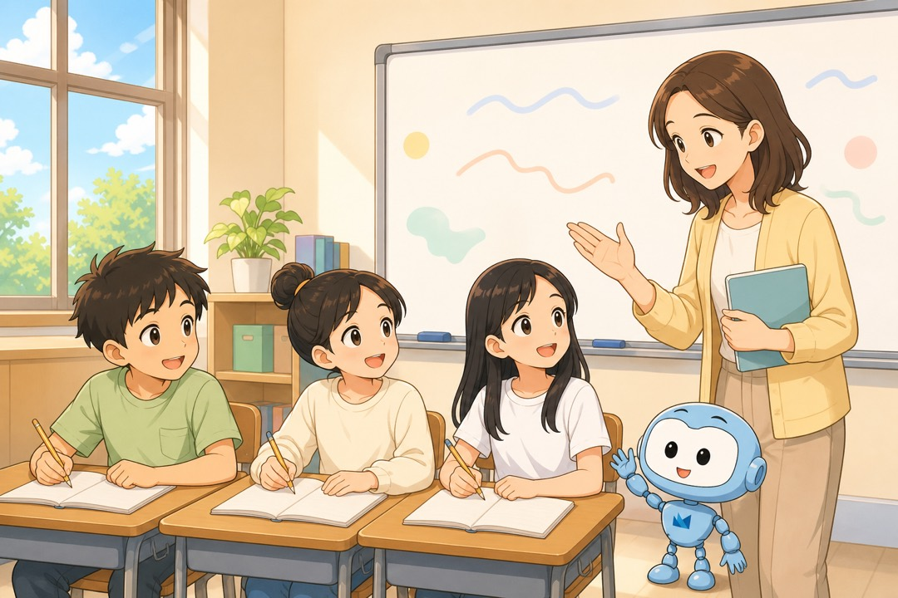
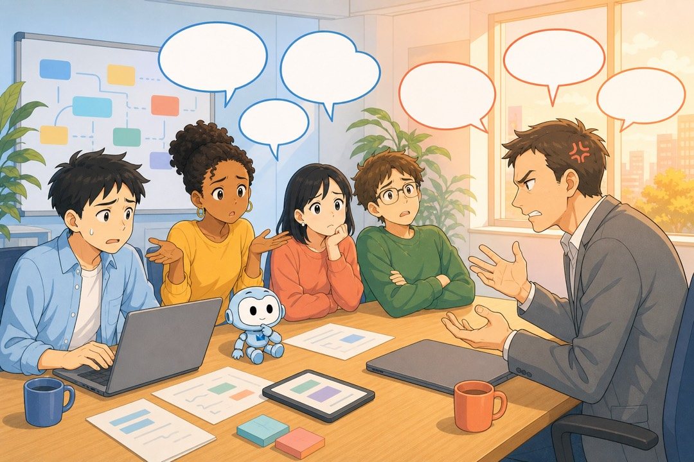
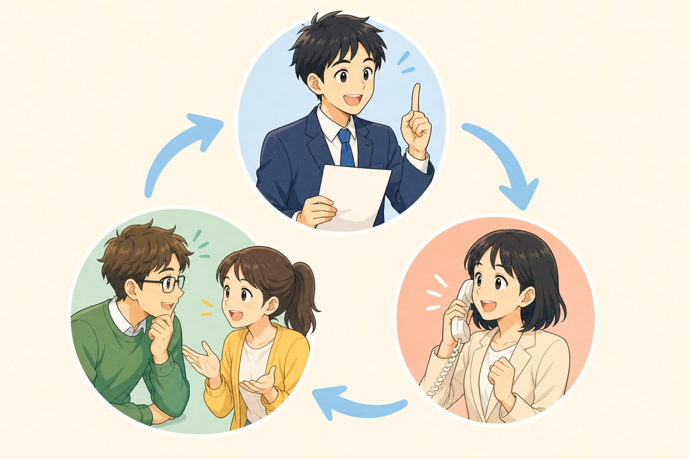

日本で エンジニアに なる ために
学校の 日本語から、仕事の 日本語へ
日本で エンジニアに なる ために。学校の 日本語から、仕事の 日本語へ。
いま と これから
学校の 日本語

今までの 勉強は「N4・N3に 合格する ため」の ものでした。
➡
会社で 使う 日本語

教科書に ない 言葉が たくさん 出て きます。
いま と これから。学校の 日本語。今までの 勉強は「N4・N3に 合格する ため」の ものでした。会社で 使う 日本語。教科書に ない 言葉が たくさん 出て きます。

仕事で つかう 4つの 力。読む（仕様書・メッセージ）。書く（報告書・チャット）。話す（会議・相談）。聞く（指示・お客さまの 話）。どれも 同じくらい 大切です。

むずかしさ1。ビジネスの 日本語。学校の 日本語は「わかりました」「すみません」。会社の 日本語は「承知しました」「申し訳 ございません」。意味は 同じでも、言い方が 変わります。

むずかしさ2。IT専門の 日本語。要件定義、設計書、アプリケーション、データベース、ソースコード。知らない 言葉は、自分で 調べて みましょう。

もし、日本語が 分からなかったら…？
チームの 人と 相談できません。お客さまの「言いたい こと」も 分かりません。
→ ほしい アプリを 作れません。
もし、日本語が 分からなかったら。チームの 人と 相談できません。お客さまの「言いたい こと」も 分かりません。ほしい アプリを 作れません。

AIの 時代。AIが プログラムを 書きます。プログラムは AIの 仕事。人の 仕事は コミュニケーション。だから 日本語が 大切です。
日本の 会社の ルール
ルール1 時間を まもります

約束の 時間の 5分前に 着きます。遅れる ときは、必ず 先に 連絡します。
ルール2 ほうれんそう

報告連絡相談
困ったら、すぐに 相談します。
日本の 会社の ルール。ルール1 時間を まもります。約束の 時間の 5分前に 着きます。遅れる ときは、必ず 先に 連絡します。ルール2 ほうれんそう。報告、連絡、相談。困ったら、すぐに 相談します。
日本には 大きな チャンスが あります
=
給料が 大きく 変わります
日本で 働く 20代は、カンボジアの トップクラスと 同じくらいに なります。

新しい 技術を 先に 学べます
AI・クラウド・VR。新しい 道具を 仕事で 使えます。
世界 2位
住みやすい 街です
大阪は 世界2位、東京は 4位。安全で、電車が 時間どおりに 来ます。

日本の 大きな 仕事の やり方は、国に 帰っても 使えます。
日本には 大きな チャンスが あります。給料が 大きく 変わります。日本で 働く 20代は、カンボジアの トップクラスと 同じくらいに なります。新しい 技術を 先に 学べます。AI・クラウド・VR。新しい 道具を 仕事で 使えます。住みやすい 街です。大阪は 世界2位、東京は 4位。安全で、電車が 時間どおりに 来ます。日本の 大きな 仕事の やり方は、国に 帰っても 使えます。

これからの 1年。仕事さがしまで、あと 1年。ITと 日本語を いっしょに 勉強します。この 1年が、あなたの 未来を つくります。

いっしょに がんばりましょう
あなたの ゆめを、ぜんぶの 力で 応援します
さいご。いっしょに がんばりましょう。あなたの ゆめを、ぜんぶの 力で 応援します。